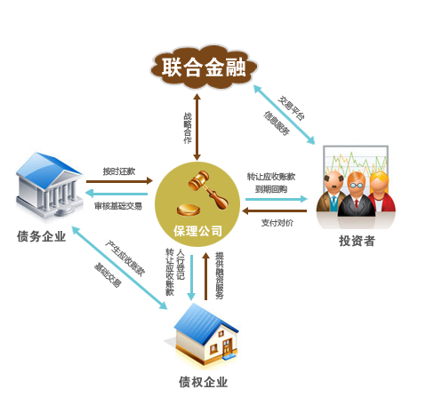

保理通（LHJR-BLT）是联合金融与领先的保理公司合作，寻找优质的应收账款资产，共同开发平台保理产品，向理财人融资，用于受让信用良好的供应商因向实力采购商供货所形成的应收账款，为供应商提供综合保理服务，同时全程监控实力采购商账款结算并将回款专项用于借款本息偿还的理财产品。用户投资本息由保理公司到期回购及原债务方的优质信誉共同提供有力保障。
1、联合金融：互联网平台，融资撮合、交易登记等服务的提供方；
2、保理公司：甄选有多年的全球化供应链管理实践经验，深入了解实业运作规律、供应链融资特点及企业需求，具备领先、成熟的业务模式和专业、严谨的风控能力的保理公司建立合作关系。这些保理公司财务状况良好，资金实力雄厚，若采购商未能按期结算账款，保理公司将承担本息偿还义务。
3、采购商：甄选国有或实力采购商，并对其采购合同享有的应收账款开展保理融资，买卖双方合作稳定，采购商实力雄厚，资信良好，还款有保障。
4、供货商：甄选通过专业信用调查机构、保险公司（如有）、保理公司及平台的多重资信审核的银行级资信供货商，若采购商未能按期结算账款，供货商承担应收账款回购义务。供货商法定代表人对供货商账款回购义务承担无限连带保证责任。
5、保险公司：若供应商购买了信用保险或履约保险，则在采购商破产或拖欠账款结算时，由保险公司进行赔付。
|  | 基础交易中的原债权方（供货商）在应收账款转让时立即将保理情况告知原债务方（购货商），到期还款时，原债务方向保理公司还款。 |
多重还款保障：还款来源为基于真实贸易项下的应收账款结算，金额、期限、还款方均已明确，对债权方有追索权，且有保理商回购和保险公司承保等多重还款来源，给用户切实有力的安全保障；
结算稳定可靠：甄选的贸易项下的买卖双方合作稳定，且账款结算方均为国有或实力企业，回款及时有保障；
风控审慎严格：项目由联合金融开发、保理商严格审核买卖双方资信，并在央行登记系统完成转让登记，同时监控账款回笼，确保账款收回及时、足额偿还本息；
理财短期高效：无费用理财、低门槛投资，基于真实账款结算的短期限（一般在6个月内）本息收回，灵活理财，乐享高收益（年化8%以上），轻松跑赢众多理财产品。